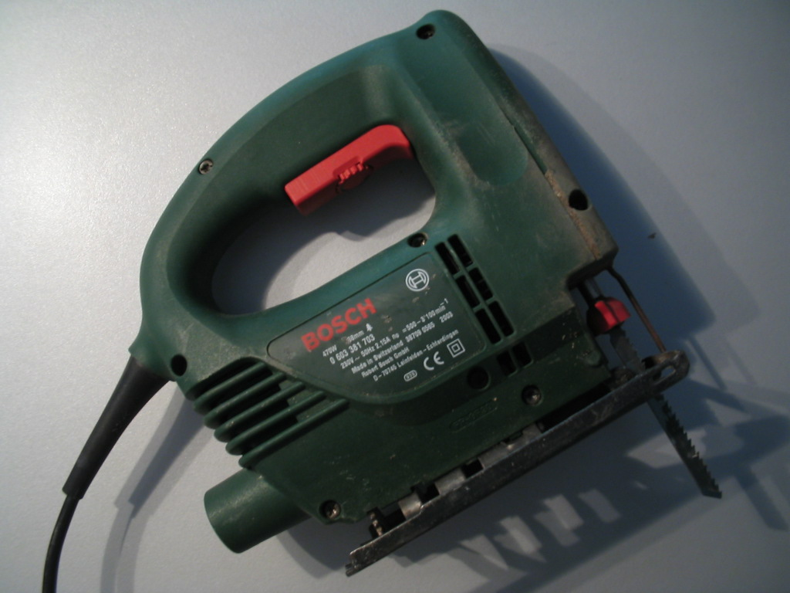
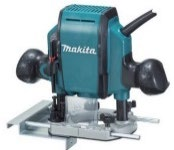
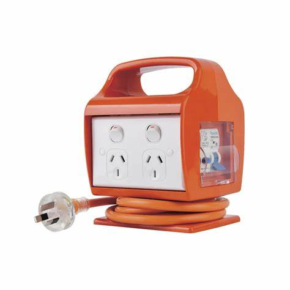

Using Construction and Carpentry Power Tools
Units: CPCCCM2005 - Use construction tools and equipment
CPCCCA2002 - Use carpentry tools and equipment
General Power Tool Safety Principles
Power tools are indispensable on a construction site but can cause serious injury if misused. The following principles apply to all powered equipment:
- Inspect before use - Check cords, plugs, casings and guards for damage. Never use a tool if it is defective or missing guards.
- Use the right tool for the job - Match the tool and accessory to the material and task. Do not modify tools or use them for purposes for which they were not designed.
- Protect against electric shock - Hand-held electric power tools and portable equipment must be protected by a residual current device (RCD) or safety switch. Examples of equipment requiring RCD protection include drills, saws, grinders and electric jackhammers.
- Keep leads off the ground - Suspend extension leads on hooks or stands and keep them away from sharp edges, heat, water and vehicle traffic. Do not overload power boards.
- Wear appropriate personal protective equipment - Eye protection, hearing protection, gloves, dust masks or respirators and sturdy footwear should be worn as required for the specific tool and material.
- Disconnect power before adjustments - Unplug the tool or remove the battery and allow moving parts to stop before changing blades, bits or discs or when clearing jams.
- Secure the workpiece and maintain good posture - Clamp or support the work firmly, keep a balanced stance and ensure others are kept clear of the work area.
- Be trained and authorised - Only trained and competent workers should operate high-risk tools such as nail guns, rotary hammer drills and jackhammers. Follow the manufacturer's instructions and any site-specific safe work method statements.
Cutting and Shaping Power Tools
|
Circular Saw |

|

|
Sliding Compound Saw |
|
Safe Usage Demonstration |

|
|  |
Jigsaw |
|
Reciprocating Saw |

|

|
Bench Grinder |
|
Router |
 |

|
Angle Grinder |
Drilling and Fastening Tools
|
Cordless Drill |

|

|
Impact Driver |
|
Rotary Hammer Drill |

|

|
Nail Gun |
Shaping and Surface Preparation Tools
|
Power Planer |

|

|
Laminate Trimmer / Router |
Electrical Safety and Equipment
|
Extension Leads & RCDs |

|
|  |
RCD Protection |
Air Tools and Compressed Air
|
Air Compressor |

|

|
Jack Hammer |
Key Safety Reminders
- Always inspect tools before use - Check for damage, missing guards, or frayed cords
- Use RCD protection - All portable power tools must be protected
- Wear appropriate PPE - Eye protection, hearing protection, and safety footwear
- Keep work areas clear - Remove tripping hazards and ensure good lighting
- Follow manufacturer instructions - Read manuals and follow safe operating procedures
- Report damaged equipment - Never use tools that are defective or unsafe